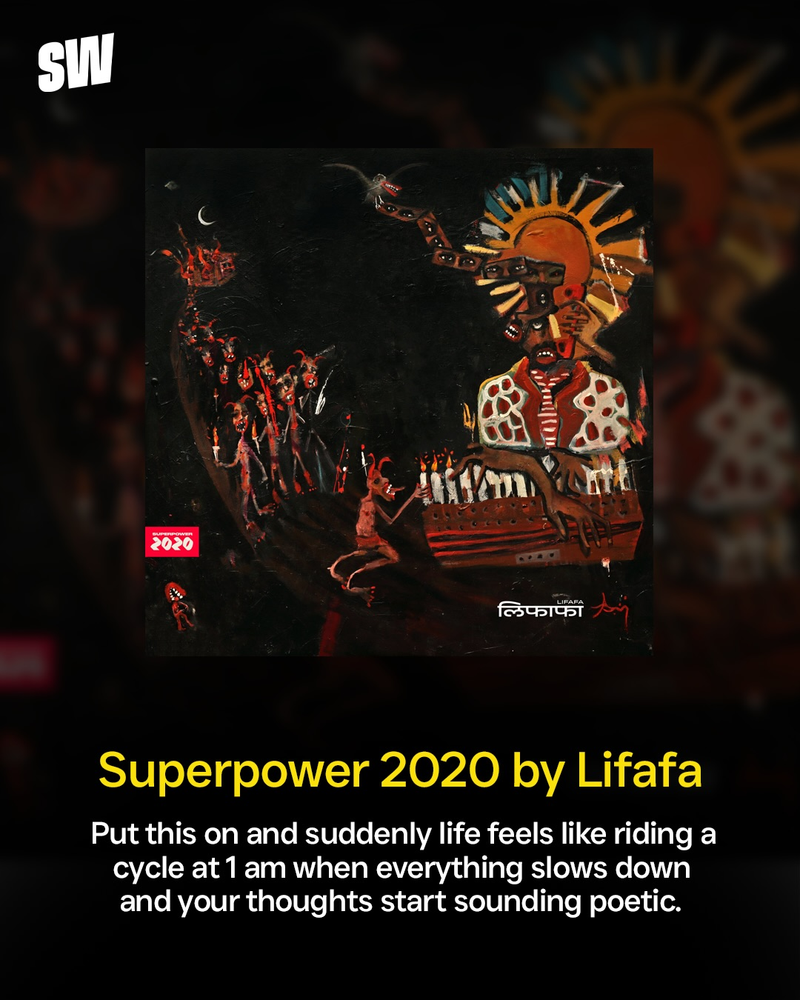
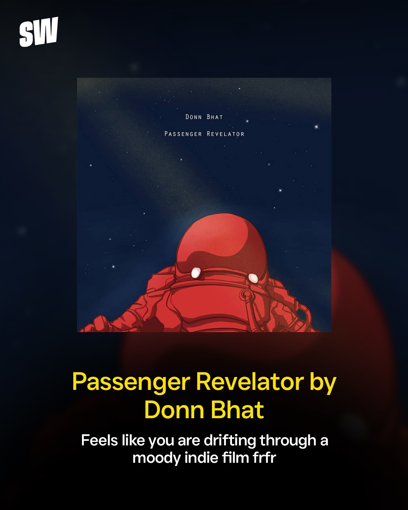
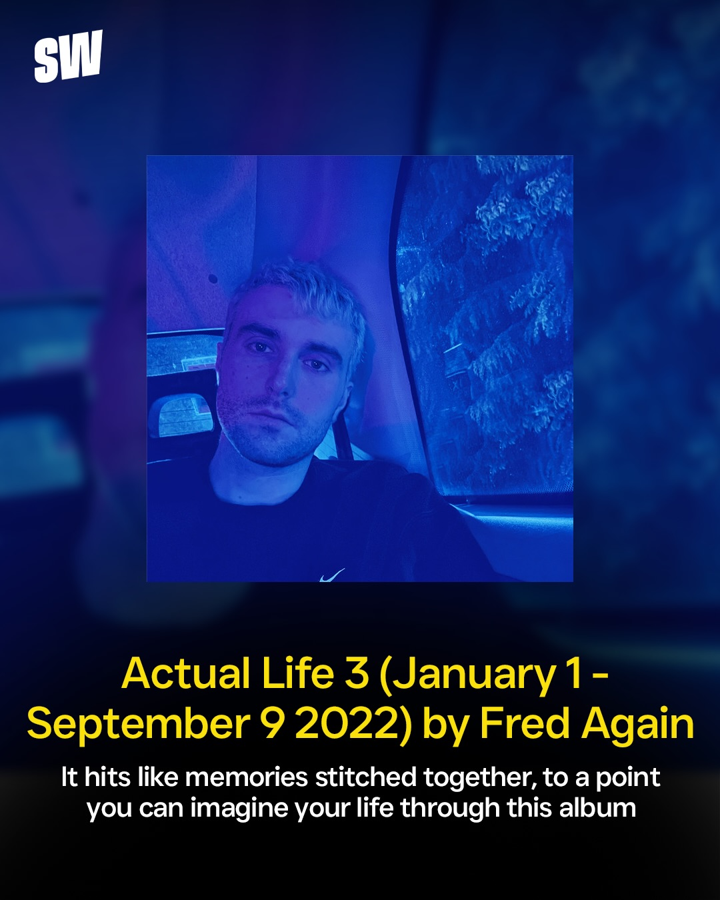
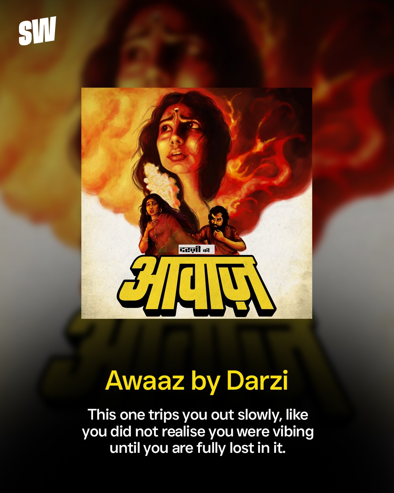
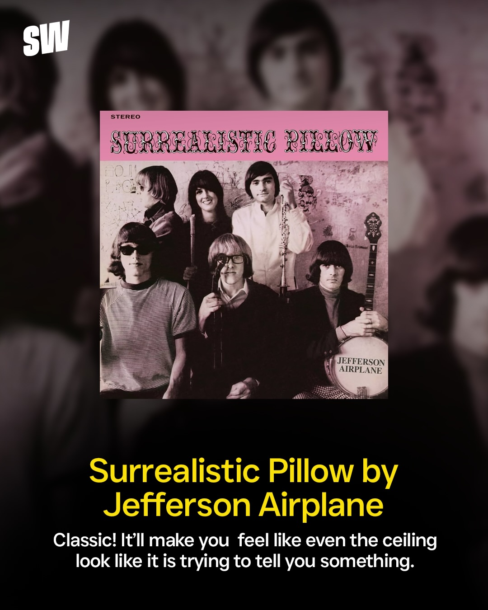
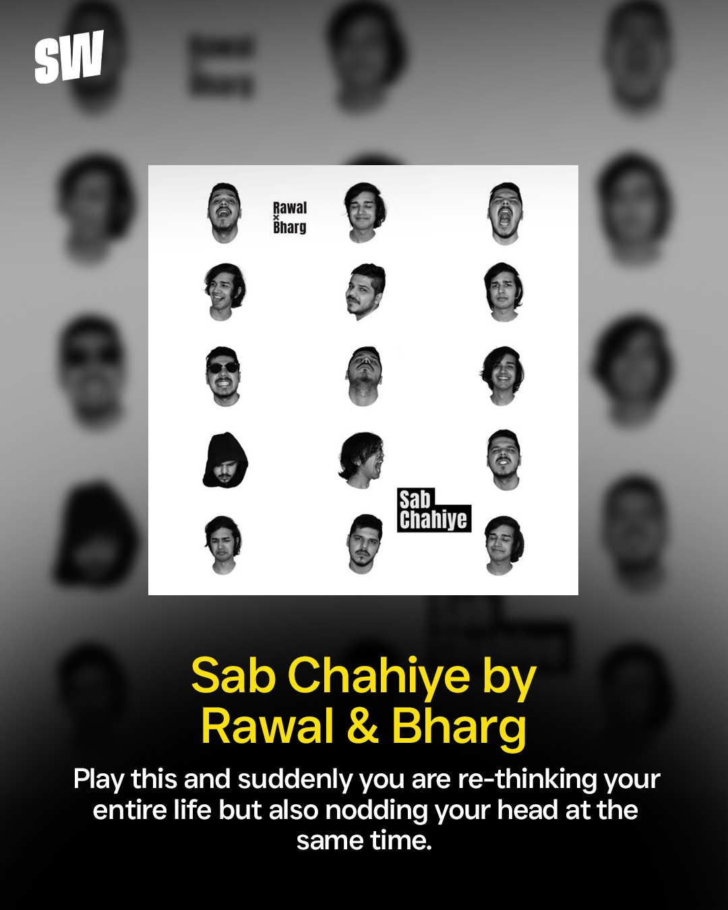
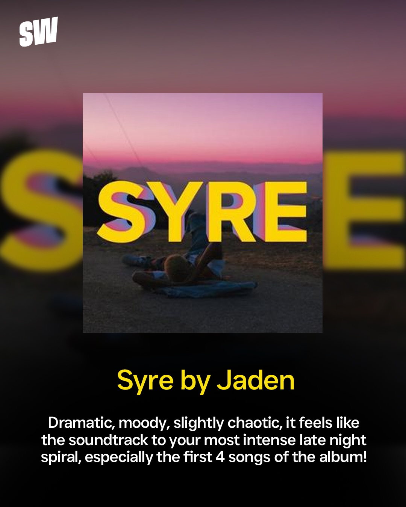

Instagram Post
Recommend more in comments🎧
carousel (10 slides) (enriched by ClaudeClaw)
Summary
SW MUSIC ALBUMS TO LISTEN TO WHEN YOU'RE HIGH | SW 2020 लिफाफा Anuj Superpower 2020 by Lifafa Put this on... | SW PARENTAL ADVISORY EXPLICIT CONTENT Let's Start Here | SW DONN BHAT PASSENGER REVELATOR Passenger Revelator by D... | SW Actual Life 3 (January 1 - September 9 2022) by Fred A... | SW गयिल का आवाज़ Awaaz by Darzi This one trips you out sl... | SW STEREO SURREALISTIC PILLOW JEFFERSON ...
Caption
Recommend more in comments🎧
Fred Again | Lifafa | Lil Yachty | Donn Bhat | Darzi | Jefferson Airplane | Rawal & Bharg | Syre by Jaden |
1
SW MUSIC ALBUMS TO LISTEN TO WHEN YOU'RE HIGH
A close-up shot shows a green cannabis leaf resting on the red body of an electric guitar, with the guitar's strings and bridge visible.
2
SW 2020 लिफाफा Anuj Superpower 2020 by Lifafa Put this on and suddenly life feels like riding a cycle at 1 am when everything slows down and your thoughts start sounding poetic.
A social media post displays an album cover featuring a dark, surreal painting of a figure playing a keyboard with a sun-like halo, surrounded by smaller figures and a boat, with text below describing the album.
3
SW PARENTAL ADVISORY EXPLICIT CONTENT Let's Start Here. by Lil Yachty This is not background music, it is the kind that makes you close your eyes and go wait what was that sound in the best way possible.
A social media post displays the album cover for "Let's Start Here. by Lil Yachty," featuring a group of diverse individuals in business attire laughing around a table, accompanied by a text description of the music.
4
SW DONN BHAT PASSENGER REVELATOR Passenger Revelator by Donn Bhat Feels like you are drifting through a moody indie film frfr
A social media post displays album art featuring a red astronaut-like figure in a starry dark blue space, with text below promoting the music.
5
SW Actual Life 3 (January 1 - September 9 2022) by Fred Again It hits like memories stitched together, to a point you can imagine your life through this album
A social media post displays a square image of a man with blonde hair under blue lighting, accompanied by text describing an album and its title, all set against a dark blue background with navigation arrows and pagination dots.
6
SW गयिल का आवाज़ Awaaz by Darzi This one trips you out slowly, like you did not realise you were vibing until you are fully lost in it.
A social media post displays a central image resembling a vintage movie poster, featuring a distressed woman against a fiery background, with two smaller figures (a woman and a bearded man) below her, accompanied by a title and a descriptive caption.
7
SW STEREO SURREALISTIC PILLOW JEFFERSON AIRPLANE Surrealistic Pillow by Jefferson Airplane Classic! It'll make you feel like even the ceiling look like it is trying to tell you something.
A social media post displays the album cover for "Surrealistic Pillow" by Jefferson Airplane, featuring the band members, with the album title and a descriptive caption below it.
8
SW Rawal Bharg Sab Chahiye Sab Chahiye by Rawal & Bharg Play this and suddenly you are re-thinking your entire life but also nodding your head at the same time.
A social media post displays a music album cover titled "Sab Chahiye by Rawal & Bharg," featuring a grid of black and white headshots, with a caption below it, all set against a blurred background of similar headshots.
9
SW SYRE Syre by Jaden Dramatic, moody, slightly chaotic, it feels like the soundtrack to your most intense late night spiral, especially the first 4 songs of the album!
The image displays a digital screen showing an album cover titled "SYRE" featuring a person lying on the ground against a sunset, with accompanying descriptive text about the album.
10
SW For more such posts, follow ScoopWhoop!
A black background displays white text "SW" in the top left, a left arrow icon on the left, and the phrase "For more such posts, follow ScoopWhoop!" with "ScoopWhoop!" in yellow in the center, along with a series of white dots at the bottom.
All slides






